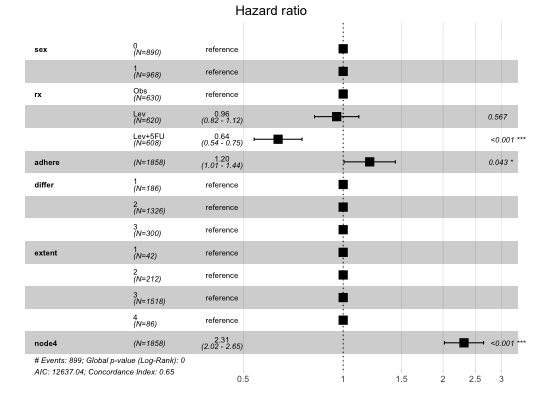

Drawing Forest Plot for Cox proportional hazards model. In two panels the model structure is presented.
ggforest(model, data = NULL, main = "Hazard ratio", cpositions = c(0.02, 0.22, 0.4), fontsize = 0.7, refLabel = "reference", noDigits = 2)
returns a ggplot2 object (invisibly)
require("survival") model <- coxph( Surv(time, status) ~ sex + rx + adhere, data = colon ) ggforest(model)#> Warning: The `data` argument is not provided. Data will be extracted from model fit.#> Warning: Removed 1 rows containing missing values (geom_errorbar).colon <- within(colon, { sex <- factor(sex, labels = c("female", "male")) differ <- factor(differ, labels = c("well", "moderate", "poor")) extent <- factor(extent, labels = c("submuc.", "muscle", "serosa", "contig.")) }) bigmodel <- coxph(Surv(time, status) ~ sex + rx + adhere + differ + extent + node4, data = colon ) ggforest(bigmodel)#> Warning: The `data` argument is not provided. Data will be extracted from model fit.#> Warning: Removed 10 rows containing missing values (geom_errorbar).